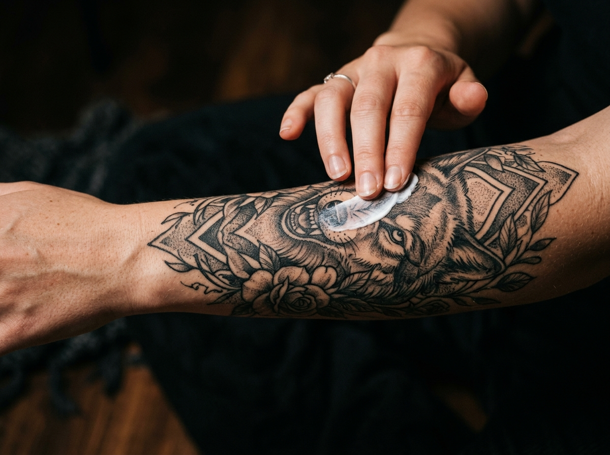
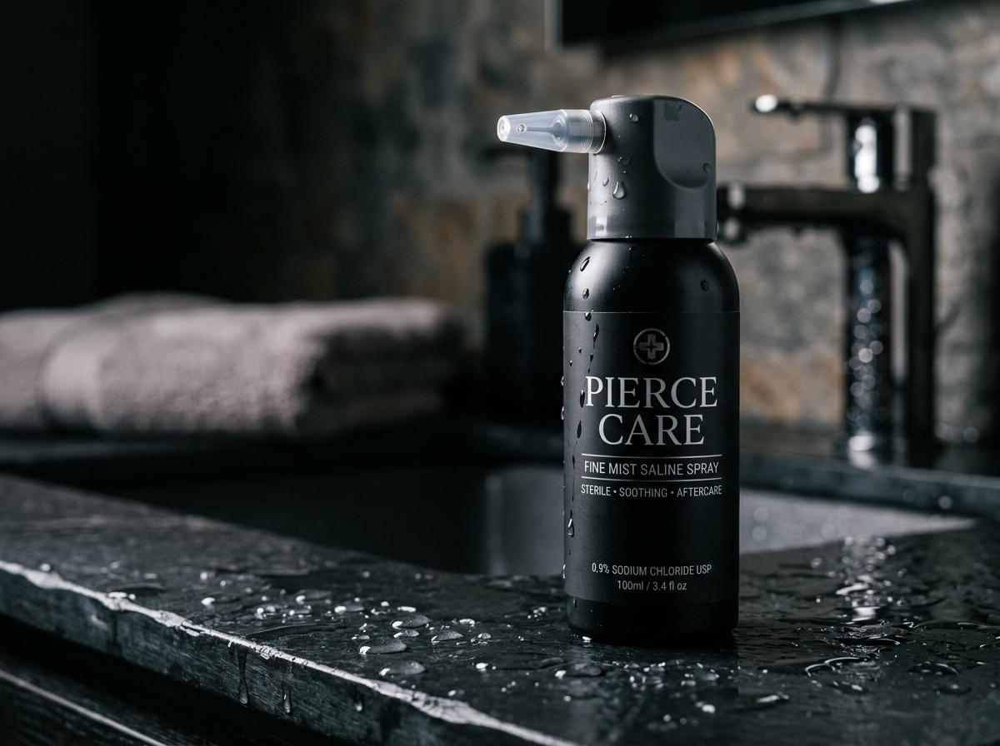
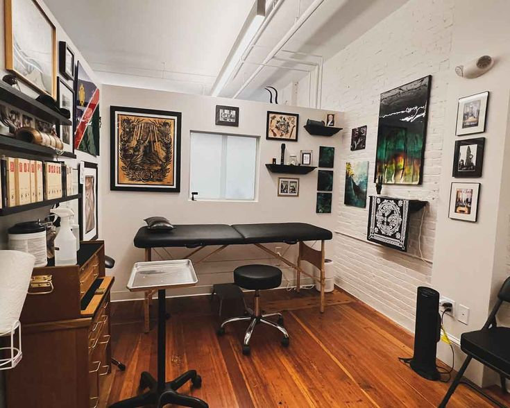

01
Phase One
Days 1 – 3
 Barrier Film
Barrier Film
Second-Skin Shield
Keep breathable film sealed 48–72h
Never rip off dry; soak in warm water
Doctor-formulated recovery milestones engineered to preserve deep pigment saturation, razor-sharp needlework, and irritation-free body piercings.
Chronological medical-grade milestones engineered to lock in crisp pigment and prevent scab trauma.
Barrier Film
Keep breathable film sealed 48–72h
Never rip off dry; soak in warm water
Wash 2x daily with foam soap & pat dry
No bathtubs, saunas, or swimming pools
 Balm Hydration
Balm Hydration
Apply micro-thin layer of balm 2x daily
Never scratch or pick peeling skin flakes

SPF GuardApply mineral SPF 50+ before sun exposure
Avoid UV rays to prevent pigment fading
Sterile irrigation protocols paired with instant clinical triage to identify healthy tissue versus complications.
 Daily Cleanse
Daily Cleanse
Medical-grade, dermatologist-approved formulations stocked directly at our studio front desk.
Raw Shea Butter • Vitamin E • Chamomile

PiercingPure 0.9% USP Sodium Chloride • Airless Nozzle
Non-Nano Zinc Oxide • Broad UVA/UVB Guard

Unsure about redness or ready for your piercing downsizing? Our studio provides complimentary in-person healing assessments 7 days a week.
Walk-ins welcome for downsizing • Always consult a medical physician if experiencing systemic symptoms